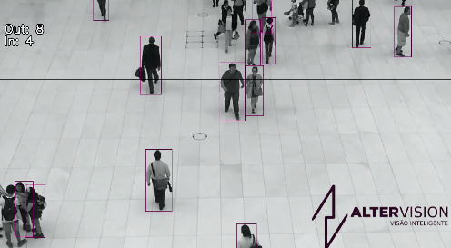

Propostas iniciais
Através das entrevistas empáticas realizadas com pessoas externas à comunidade acadêmica levantamos diferentes cenários de aplicação da visão computacional visando sanar um problema recorrente no dia a dia das pessoas seja em âmbito pessoal ou profissional.
Com isso, duas das principais ideias foram levadas a debate interno do grupo com objetivo de escolher a que melhor se encaixava com o aprendizado da disciplina bem como com as ferramentas disponíveis para a implementação do estudo.
Proposta 1 - Contagem de pessoas em lojas e eventos
A primeira ideia visa fazer a contagem de público em lojas e eventos em geral de forma automática utilizando ferramentas de captura de imagens em tempo real, tal conceito pode ser amplamente aplicado a diversas lojas, eventos em geral ou até mesmo para controle de fluxo de pessoas em locais de transporte público.
Para possível implementação foi necessário fazer uma busca a respeito do caso levantando os possíveis desafios da aplicação e as etapas fundamentais para a implementação do conceito que foram descritas a seguir:
A aplicação de visão computacional com algoritmos de reconhecimento de pessoas para contagem de público em lojas e eventos é uma solução tecnológica cada vez mais adotada para monitorar e gerenciar a participação nesses espaços de forma eficiente. Este sistema utiliza câmeras de vídeo para capturar imagens em tempo real, onde algoritmos de visão computacional são aplicados para detectar e rastrear pessoas dentro do campo de visão das câmeras.
O processo envolve várias etapas fundamentais:
- Detecção de Pessoas: Algoritmos de detecção de objetos são utilizados para identificar e delimitar áreas onde pessoas estão presentes nas imagens capturadas pelas câmeras.
- Reconhecimento e Rastreamento: Após a detecção inicial, algoritmos de reconhecimento facial ou corporal podem ser aplicados para identificar indivíduos específicos ou para simplesmente rastrear a movimentação geral das pessoas ao longo do tempo.
- Contagem Automática: Com base nas informações obtidas do reconhecimento e rastreamento, um sistema computacional realiza a contagem automática de pessoas presentes no evento. Isso pode ser feito em tempo real ou através da análise posterior das gravações.
Benefícios dessa abordagem incluem:
- Precisão e Eficiência: O uso de algoritmos de visão computacional minimiza erros associados à contagem manual e oferece resultados mais precisos e rápidos.
- Monitoramento em Tempo Real: A capacidade de monitorar o número de participantes em tempo real permite uma gestão mais eficaz do evento, facilitando ajustes imediatos conforme necessário.
- Análise de Dados: Os dados coletados podem ser analisados para obter insights valiosos sobre padrões de participação, horários de pico, e fluxos de tráfego, auxiliando na tomada de decisões da loja e em estratégicas para futuros eventos.

Figura 1: Exemplo de Contagem de Pessoas com Visão Computacional da AlterVision
Proposta 2 - Aplicação de normas técnicas em projetos elétricos
Um outro cenário seria a aplicação de ferramentas de análise de imagens para a implantação de normas técnicas aplicadas à construção civil, mais precisamente no desenvolvimento de projetos elétricos residenciais:
Com isso, o projeto visa atender requisitos mínimos da NBR 5410 que impõe conceitos a serem levados em conta no dimensionamento de um projeto elétrico residencial.
A ferramenta age fazendo o reconhecimento da imagem fornecida, que por sua vez carrega um layout de uma planta de uma residência com o objetivo de fornecer a ferramenta computacional informações a respeito de qual cômodo está sendo retratado na imagem, e com base no seu reconhecimento consultar as normas técnicas que retratam número mínimo de tomadas e localização desses pontos conforme o layout fornecido.
Para possível implementação foi necessário fazer uma busca a respeito do segundo caso levantando os possíveis desafios da aplicação e as etapas fundamentais para a implementação do conceito que foram descritas a seguir:
A visão computacional aplicada ao reconhecimento de layout de residências para aplicação das normas técnicas de elétrica, como a NBR 5410 da Associação Brasileira de Normas Técnicas (ABNT), é uma abordagem que facilita o planejamento preciso e eficiente da distribuição de pontos de iluminação e tomadas dentro do ambiente.
Processo de Reconhecimento de Layout:
- Captura de Imagens: O processo inicia-se fornecendo imagens 2D de uma planta da residência para análise computacional. Essas imagens são essenciais para obter uma representação digital fiel do ambiente.
- Análise e Segmentação: Algoritmos de visão computacional são empregados para analisar as imagens e segmentar elementos chave do ambiente, como paredes, móveis, e áreas de circulação. Este processo pode incluir técnicas avançadas de processamento de imagem para reconhecimento automático de objetos e estruturas.
- Identificação de Pontos de Instalação: Com base na análise do layout, os algoritmos são programados para identificar locais adequados para a instalação de pontos de iluminação e tomadas, levando em consideração as diretrizes estabelecidas pela norma NBR 5410. Isso inclui distâncias mínimas entre pontos de tomada, alturas recomendadas para interruptores e tomadas, e localização estratégica para atender às necessidades de uso e segurança.
Benefícios da Visão Computacional na Aplicação da NBR 5410:
- Precisão e Consistência: Reduz erros humanos comuns na interpretação e aplicação das normas técnicas, garantindo uma distribuição elétrica precisa e segura.
- Eficiência: Agiliza o processo de planejamento ao automatizar tarefas de identificação e posicionamento de pontos elétricos, economizando tempo e recursos.
- Conformidade: Assegura que as instalações elétricas estejam em conformidade com as normas estabelecidas, promovendo segurança e confiabilidade para os usuários finais.
Definição do tema do projeto
Com base nos estudos feitos e informações levantadas, o grupo analisou que a proposta número 1 (Contagem de pessoas em lojas e eventos) é o melhor tema a ser utilizado para o desenvolvimento do trabalho da disciplina de visão computacional.
Nessa aplicação faremos a contagem populacional de uma determinada região através das etapas descritas previamente aliadas a análise de imagem que pode ser por uma câmera apontada para entrada e saída do respectivo evento ou ambiente. O usuário em si não precisa ter nenhuma interação com a ferramenta durante o processo de atuação pois a imagem já servirá como base para todas as análises necessárias.
O tema foi escolhido pois engloba conceitos mais atrelados ao escopo da disciplina e possui uma gama maior de conteúdos de apoio como referências técnicas e vídeos explicativos. Além disso é uma área mais abrangente e que pode abrir novos cenários de implantação com os conhecimentos obtidos no curso.
Referências
Como a análise do tráfego e contagem de clientes pode aumentar a lucratividade da sua loja? Disponível em: https://intradata.ai/blog/como-a-analise-do-trafego-e-contagem-do-fluxo-de-clientes-pode-aumentar-a-lucratividade-da-sua-loja/. Acesso em: 5 jul. 2024.
Contador de Fluxo - Venda. Disponível em: https://www.altervision.com.br/venda-contagem-de-visitas/?utm_source=google&utm_medium=cpc&utm_campaign=SD-conversoes-search-espec&gad_source=1&gclid=Cj0KCQjwv7O0BhDwARIsAC0sjWOi3yRCvG1b1hegy2vgyrD1AiKk_C-oFD0T-zlg_RUyt_-7h6PfyloaAsCsEALw_wcB. Acesso em: 5 jul. 2024.
COUTO, R. Contador de pessoas: Ferramenta indispensável para o seu negócio. Disponível em: https://www.novvasolutions.com.br/blog/contador-de-pessoas/. Acesso em: 5 jul. 2024.
DIMENSIONAL. O que é e quais são os benefícios da contagem de fluxo em lojas físicas? Disponível em: https://blog.dimensional.com.br/contagem-de-fluxo-em-lojas-fisicas/. Acesso em: 5 jul. 2024.